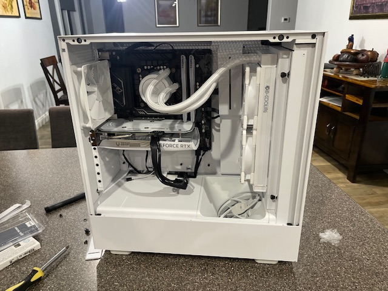
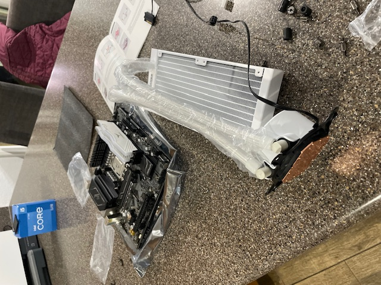
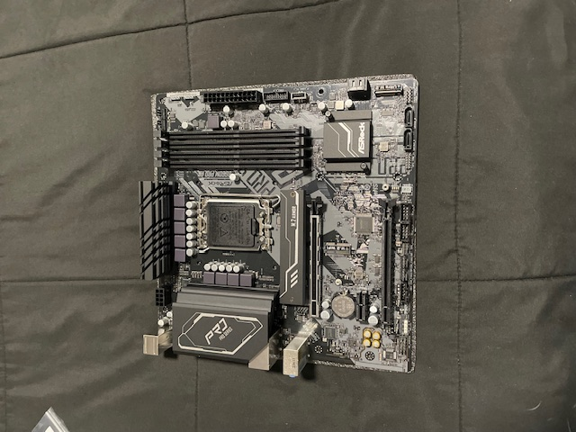
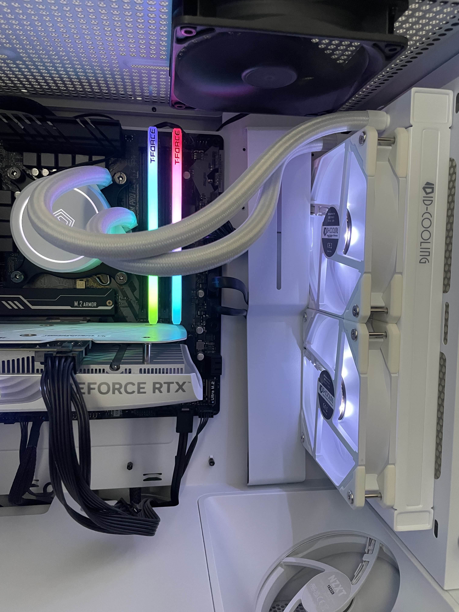
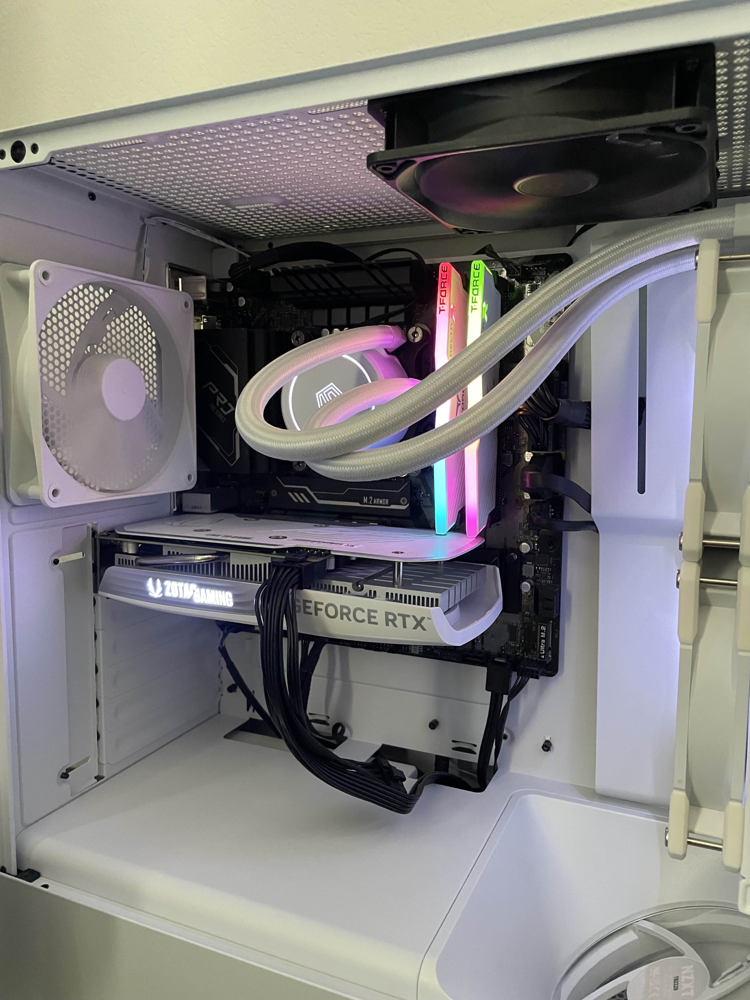

Custom PC Build





Project Overview
I built this custom desktop computer for productivity and gaming reasons. I chose an RTX 4060 for high gaming performance, this graphics card is equipied with 8GB of GDDR6 memory. I went with the intel core I5-12400 processor which provides 6 core addition 4.40GHz of frequency.
Key Features
- RTX 4060
- 16 GB of RAM
- Liquid Cooled CPU
What I Learned
With this project I learned a lot of hardware assembly, I chose the parts carefully for a good gaming experience while making sure the parts were also compatible. I decided to go with a a liquid cooled system for better CPU performance to handle heavy tasks better. I also used M.2 storage to have better laoding speeds in programs.